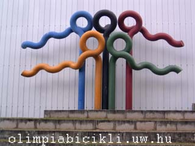
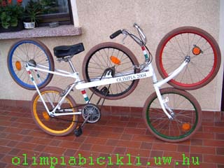
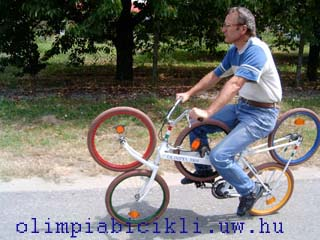
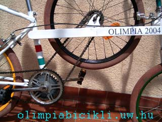
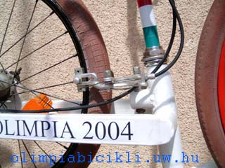
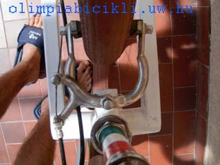
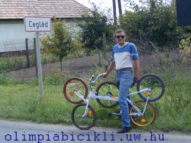

 
Egyrészt kedvtelésbõl, másrészt a 2004. évi nyári olimpiai játékok tiszteletére.
Az OLIMPIABICIKLI egy jármû, de a különleges kinézete révén akár kinetikus szobornak is tekinthetõ, ugyanis az öt kerék elhelyezése és színe megfelel az olimpiai játékok ötkarikás szimbólumának.
Mozgás közben mind az öt kerék forog. A földön guruló kerekek és a középen levõ kerék elõre, a fenti elsõ és hátsó kerék ellentétesen forognak.

Az OLIMPIABICIKLI alapja egy CAMPING kerékpár, 2 db 20 collos kerékkel.
Elõször ezt alakítottam át úgy, hogy az elsõ villa fölé beépítettem még egy elsõ villát.
Az ebben elhelyezett kereket dörzshajtással forgatja a földön futó elsõ kerék.
Hátulra is beépítettem egy plusz hátsó villát. Ez eredetileg egy 28 collos kerékpár vázának az alkotórésze volt. Az ide beszerelt kereket szintén dörzshajtással forgatja a földön futó hátsó kerék.
A középsõ kerék beépítéséhez a váz középsõ részét teljesen kicseréltem. Az új vázrészt 40x20-as zártszelvény darabokból alakítottam ki.
A középsõ kerék mozgatását lánchajtással oldottam meg. Ehhez felszereltem még egy lánckereket a nagy lánckerék mellé.

Az OLIMPIABICIKLI-nek három, egymástól függetlenül mûködõ fékje van:
 
Jó szórakozást és szép eredményeket kívánok a 2012-es olimpiai játékokra.
Örökké éljen az olimpiai eszme!
Jenõ
